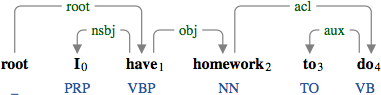
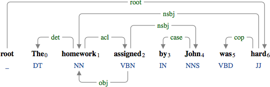
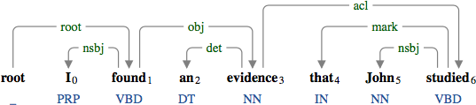

A clausal modifier of noun (acl) is either an infinitive clause, a participial clause, or a clausal complement that modifies the head of a noun phrase.

The infinitive clause "to do" modifying the noun "homework".

The participial clause "assigned by John" modifying the noun "homework".

The clausal complement "that John studied" modifying the noun "evidence".